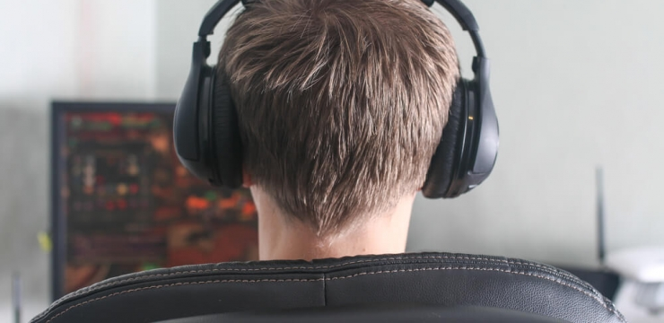

|
O profissionalismo que os jogos e as equipes estão adquirindo, o mercado em crescimento, a desmistificação dos games como algo que “faz mal para crianças”, tudo isso só contribui para que o futuro dos e-sports seja realmente promissor. |
 |
|
Um passo muito importante foi dado para isso: a Federação Internacional de eSports entrou com o pedido para que a modalidade se torne um esporte olímpico e recebeu do Comitê Olímpico Internacional uma resposta com os passos a serem seguidos para o reconhecimento das competições de e-sport e para inclusão nas Olimpíadas. |